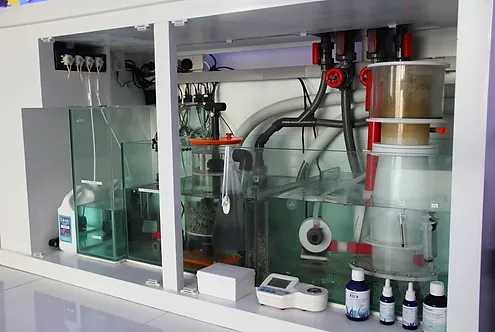
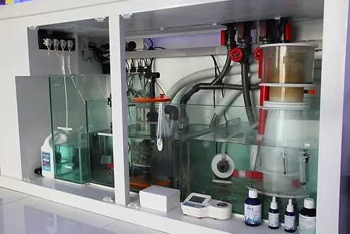

The ideal parameters are the margin where the water is at its best parameters for the aquarium ecosystem. It is possible for the parameters to change very little (around 5% at most) and still maintain good water quality, but the aquarist must be very attentive to this as the risk of it getting worse is much greater. The ideal parameters for marine aquariums are:
Density: 1023 and 1026 kg/m³
Salinity: 33 to 37 grams per liter
Temperature: from 24ºC to 26°C
Calcium: 420 and 500ppm
Magnesium: between 1300 and 1500ppm
Alkaline reserve: between 7 and 11dKH
pH between 8 and 8.3
Ammonia: maximum 0.1ppm
Nitrite: Maximum 0.1ppm
Nitrate: maximum 0.2ppm
Phosphate: maximum 0.03ppm
Remember: Stay consistent with your method/maintenance routine. Nothing good comes fast.